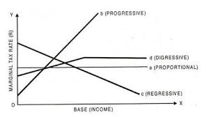
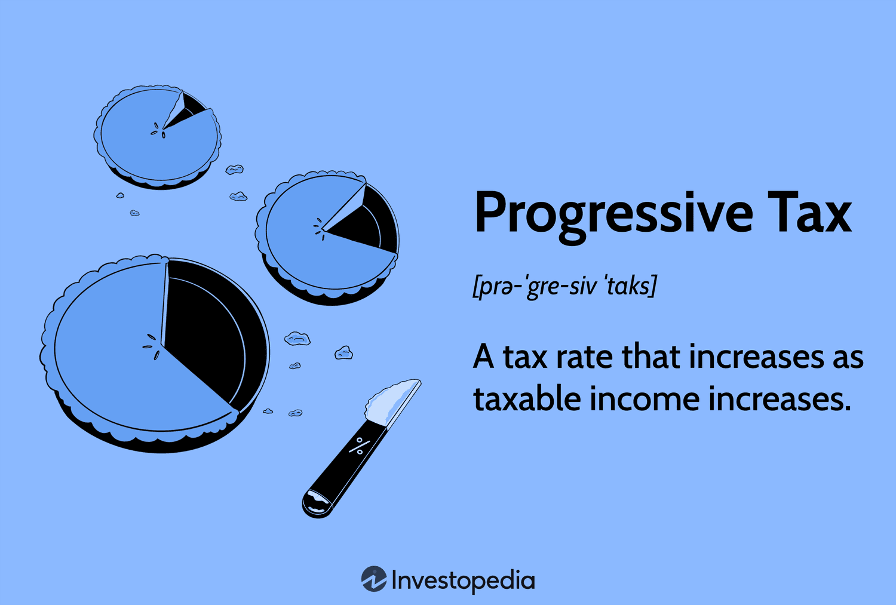
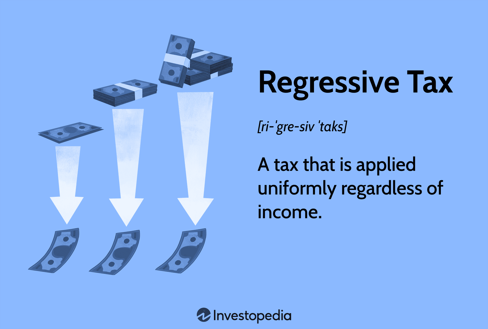

- Pillar 2A1-i: Budget
- Fiscal Policy
- Definition:
- Fiscal policy involves government decisions on taxation, expenditure, subsidies, and other financial operations to influence savings, investment, and consumption, achieving national goals like income redistribution, socio-economic welfare, economic development, and inclusive growth.
- Etymology:
- Derived from Greek “fiscus” (basket), symbolizing the public purse.
- Significance:
- Employment:
- Funds welfare schemes (e.g., MGNREGA, Pillar#6) to create jobs.
- Inflation Control:
- Higher income taxes reduce disposable income, curbing demand; lower taxes during deflation boost demand (Pillar#4).
- Economic Growth:
- Tax benefits on savings (e.g., LIC, Mutual Funds) provide capital for industries, leading to factory expansion, jobs, and GDP growth (Pillar#4).
- Inclusive Growth:
- Higher taxes on the rich fund health, education, and poverty alleviation (Pillar#6).
- Regional Balance:
- Tax incentives for industries in backward areas (e.g., North East, Naxal-affected regions).
- Exchange Rate Stability:
- Tax benefits for exporters and higher import duties reduce Current Account Deficit (CAD), stabilizing INR:USD rates (Pillar#3).
- Budget
- Definition:
- Annual financial statement detailing estimated revenues and expenditures for the next financial year, serving as the primary tool for implementing fiscal policy.
- Constitutional Basis:
- Article 112 mandates the Annual Financial Statement (AFS).
- Funds
- Three Constitutional Funds related to Budget
- 1. Article 266 - Consolidated Fund of India (CFI)
- Contains:
- All incoming tax revenues (both direct and indirect),
- All money raised via borrowings (internal and external loans),
- Recoveries of loans previously given by the government.
- Withdrawal requires Parliamentary approval.
- Exception:
- Charged Expenditure (e.g. salaries of President, Judges, CAG) – automatic withdrawal without vote.
- This is the largest and most important fund for the Government of India.
- 2. Article 266 - Public Account of India
- Includes:
- Transactions where the government acts as a banker or trustee.
- Examples:
- Provident Fund, Postal Savings, Small Savings, Income Tax Refunds, etc.
- Since the money does not belong to the government, Parliamentary approval is not required for withdrawal.
- However, if a new fund is being created (e.g., Central Road Fund via Act of 2000), Parliament’s approval is needed to create it.
- Government only manages this account, transfers in and out as needed.
- 3. Article 267 - Contingency Fund of India
- Purpose:
- To meet unforeseen and urgent expenditure (natural disasters, emergencies, pandemics, etc.).
- Held by:
- Finance Secretary (Dept of Economic Affairs) on behalf of the President.
- Process:
- Government spends first → then takes ex post-facto approval from Parliament.
- The amount is later refilled from the Consolidated Fund of India (CFI).
- Budget 2021 Reforms:
- Corpus raised from ₹500 crore to ₹30,000 crore.
- Distribution:
- 40% kept with Department of Expenditure,
- 60% with Department of Economic Affairs (DEA).
- Non-budgetary / Extra-budgetary / Donation funds
- Definition
- Funds that operate outside the Consolidated Fund of India.
- Not voted or discussed in Parliament; hence, not part of the Union Budget.
- Typically formed as public charitable trusts under the Indian Trusts Act, 1882.
- Mainly used for emergency relief, public welfare, or disaster assistance.
- Financed via voluntary donations from individuals, corporates, and institutions.
- No direct budgetary allocation or disbursement from government expenditure.
- Some enjoy income tax exemption benefits and CSR eligibility.
- Features
- Operate outside Government accounts like Consolidated/Contingency Fund.
- Administered directly by the PM or designated committees.
- Not audited by the CAG by default unless voluntarily submitted.
- Transparent reporting may be voluntary or court-directed, not mandatory.
- No parliamentary oversight unless judicially compelled.
- Examples
- Prime Minister’s National Relief Fund (PMNRF)
- Set up in 1948 by PM Nehru, initially to aid Partition refugees.
- Now used for assistance to victims of:
- Natural disasters (floods, earthquakes)
- Accidents
- Acid attacks
- Major illnesses (e.g., cancer, kidney failure)
- Accepts individual and corporate donations.
- Donations eligible for 100% Income Tax deduction under Section 80G.
- Does not receive funds from Consolidated Fund of India.
- PM CARES Fund
- Prime Minister’s Citizen Assistance and Relief in Emergency Situations
- Set up in 2020 to deal with COVID-19 pandemic.
- For disaster management and research funding (e.g., ventilators, vaccines).
- Donations:
- 100% tax-deductible under Section 80G.
- Eligible under CSR (Corporate Social Responsibility) norms.
- Audit:
- Not audited by CAG; audited by private Chartered Accountants appointed by trustees.
- Criticism:
- Lack of transparency.
- Overlap with existing funds like PMNRF.
- Not subject to RTI as per PMO’s response.
- CM Relief Funds
- State-level counterparts to PMNRF.
- e.g., Maharashtra CM’s Relief Fund, Tamil Nadu CM Relief Fund
- Accept public donations for natural calamities, accidents, medical emergencies.
- Eligibility for tax deduction and CSR support varies by state and notification.
- National Defence Fund
- A separate National Defence Fund (created in 1962) also exists under PM’s office for welfare of armed forces and paramilitary forces.
- Notes
- These funds are not extra-budgetary resources (EBRs) used for capital expenditure.
- Should not be confused with statutory non-lapsable funds like NDRF (which are part of Public Account of India).
- Courts (e.g., SC in 2020) have recognized PM CARES as a separate public charitable trust distinct from state accountability mechanisms.
- Both PMNRF and PM CARES are considered private charitable trusts under Indian Trust Act, 1882, but there is debate over whether they should be treated as public accounts for transparency.
- RTI Controversy:
- PM CARES is not currently subject to Right to Information (RTI) disclosures; this has led to criticism and ongoing legal debate regarding public accountability.
- Three Documents Related to Budget (Constitutional and Legal Basis)
- Definition:
- The Indian Constitution mandates the Union Government to present a set of financial documents before Parliament every financial year. These are not just formalities but are required for legal authorization of revenue collection and expenditure.
- Origin:
- The term "Budget" comes from the French word *bougette*, meaning a leather bag or small pouch.
- Traditionally, the Finance Minister would carry the budget documents in a suitcase.
- In 2019, Finance Minister Nirmala Sitharaman replaced the suitcase with a traditional red cloth (called 'Bahi-Khata') to shed colonial symbolism.
- Key Budget-Related Documents:
- 1. Annual Financial Statement (AFS) – Article 112
- Constitutionally mandated budget document.
- Contains:
- Actual receipts and expenditures of the previous financial year.
- Estimated receipts and expenditures for the current financial year.
- Revenue expenditure must be shown separately from other expenditures (like capital expenditure).
- There is no requirement to:
- Present a separate Railway Budget.
- Show plan vs. non-plan expenditure (a practice now obsolete).
- 2. Finance Bill – Articles 110 & 117
- Required to give legal effect to the government’s taxation proposals.
- Parliament's approval is necessary to impose, modify, or remove taxes.
- Parliament can:
- Reduce or abolish a proposed tax.
- Parliament cannot:
- Increase a tax beyond what is proposed in the Finance Bill.
- E.g., If government proposes 35% import duty on shoes, MPs can vote to reduce or retain it, not raise it to 45%.
- Finance Bill is a Money Bill:
- Passed only by Lok Sabha.
- Rajya Sabha can only suggest changes within 14 days—Lok Sabha is not bound to accept them.
- 3. Appropriation Bill – Article 114
- Authorizes the government to withdraw funds from the Consolidated Fund of India (CFI).
- Covers all government spending.
- Two types of expenditures:
- a. Charged Expenditures (non-votable):
- Automatically approved without voting.
- E.g., salaries of Supreme Court Judges, CAG, President.
- b. Votable Expenditures:
- Government schemes, departmental spending, etc.
- Subject to discussion and vote in Lok Sabha.
- Appropriation Bill is also a Money Bill (Art. 110), so same Rajya Sabha limitations apply.
- Special Notes:
- Sometimes, to bypass Rajya Sabha, the ruling party may include non-financial provisions (like regulatory changes) inside the Finance Bill.
- Whether a Bill is classified as a Money Bill is solely decided by the Lok Sabha Speaker.
- [Art. 110(3)] — Speaker's decision is final.
- [Art. 122] — Courts cannot question this decision.
- Six Stages of Passing the Budget in Parliament
- Stages:
- 1. Presentation of Budget.
- 2. General Discussion.
- 3. Scrutiny by Departmental Committees.
- 4. Voting on Demands for Grants, Cut Motions, Guillotine.
- 5. Passing of Finance Bill.
- 6. Passing of Appropriation Bill.
- Reference:
- Self-study from Indian Polity by M. Laxmikanth (Parliament chapter).
- Financial Year (FY)
- The concept of Financial Year in India dates back to 1867 when the British Indian Government adopted the 1st April to 31st March cycle to align with the financial year followed in Britain.
- Although the Constitution of India does not prescribe any specific dates or months for the Financial Year, we have continued the colonial-era legacy of April–March.
- In 2016-17, the Ministry of Finance constituted the Shankar Acharya Committee to evaluate whether India should shift the financial year to alternatives like:
- January to December (calendar year), or
- Cropping seasons such as Rabi–Kharif cycle, with the goal of improving estimation and management of tax revenues and expenditures.
- In 2017, the proposal for change was dropped because most states opposed it. The change would have required major overhauls in accounting systems, reporting software, training, and budget cycles — and the anticipated benefits were not substantial enough to justify this transition.
- In 2020, during the COVID-19 pandemic, there were widespread rumors that the Government had shifted the financial year to a different period — however, these were confirmed to be false. The financial year remains unchanged: 1st April to 31st March.
- Vote on Account
- Definition:
- A temporary legislative authorization for the government to withdraw money from the Consolidated Fund of India (CFI) to meet essential expenses until the full Budget is passed.
- Required when the Appropriation Bill for the new financial year is not enacted before 31st March.
- Background:
- The Constitution does not fix a mandatory date for presenting the Union Budget.
- Before 2017, the Budget was presented on the last working day of February.
- But the entire Budget process (6 stages) took until May to complete.
- Meanwhile, the financial year would end on 31st March.
- After 31st March, the previous year’s Appropriation Act expires.
- Hence, government would not have legal authority to withdraw funds, even for routine expenses like salaries, pensions, electricity bills, etc.
- Purpose:
- To avoid a financial vacuum or shutdown of routine government operations.
- Parliament (practically Lok Sabha) grants temporary permission through a Vote on Account to withdraw funds from the CFI.
- It typically authorizes spending for two months, usually one-sixth of the estimated annual expenditure.
- Duration and Limit:
- Usually valid for two months.
- Amount approved is generally around one-sixth of the total budgeted expenditure.
- Can be extended in case of extraordinary situations like elections or emergencies.
- Not a substitute for the full budget:
- Vote on Account only allows withdrawal for essential services.
- It does not include provisions for major policy changes or new schemes.
- Post-2017 Developments:
- From 2017 onwards, the government began presenting the Budget on the 1st working day of February.
- This ensured that the entire process — including Appropriation Bill — is completed before 31st March.
- Hence, Vote on Account became unnecessary in regular years.
- Exceptions:
- In 2019 and 2024, interim budgets were presented before general elections.
- Government sought a Vote on Account instead of full budget, as the new government post-election might want to make significant changes or present a fresh budget.
- This also gave the incumbent government flexibility to introduce a large Appropriation Bill if re-elected.
- FAQ / Counterpoints:
- Why did Modi Govt use Vote on Account in 2019 and 2024 even after early Budget timing reform?
- No detailed justification was publicly given.
- No PILs were filed in Supreme Court challenging this.
- Neither NITI Aayog nor Economic Survey commented on it.
- Columnists and experts also did not raise major issues.
- Practically, it was seen as a politically strategic and legally permissible move.
- Interim Budget
- A temporary budget presented by the government when full Budget cannot be passed due to upcoming general elections
- It's called interim because it serves as transition between the newly elected and existing government
- Purpose:
- To meet government expenditure for a short period (usually a few months)
- Our Constitution does not define or mandate the concept of an Interim Budget.
- However, during an election year or in extreme situations (e.g. when a coalition government collapses prematurely), it is considered unethical for the outgoing government to make drastic or populist changes in the budget, like announcing "free gold for BPL girls' marriages".
- Hence, while such governments still present a budget in the regular format (3 documents: Annual Financial Statement, Finance Bill, Appropriation Bill; and undergo 6 stages of passing), they generally avoid grand populist announcements.
- Such budgets are called Interim Budgets.
- Examples of Interim Budgets:
- 2004 - Yashwant Sinha
- 2009 - Pranab Mukherjee
- 2014 - P. Chidambaram
- 2019 - Piyush Goyal
- 2024 - Nirmala Sitharaman
- Just like a regular General Budget, an Interim Budget is also valid for the whole financial year.
- However, if a new government is formed in between, it may present another (full/general) budget to change provisions.
- Example:
- In February 2014, FM Chidambaram presented the Interim Budget in the 15th Lok Sabha. After the elections, the BJP-led government presented the full General Budget in July 2014 (16th Lok Sabha) via FM Arun Jaitley.
- Similarly, in both 2019 and 2024, Interim Budgets were presented in February, followed by full budgets in July after elections.
- Note:
- For easier revision and visualization, the term "Full Budget" is used here to distinguish it from "Interim Budget". But in UPSC Mains, use the correct term: General Budget.
- Budget Theme
- Although the Constitution doesn’t require it, sometimes Finance Ministers include a specific "theme" in their Budget speech to create media attention.
-
| Budget Year |
Theme Mentioned |
Details |
| 2021 |
Paperless |
- No specific theme was mentioned in the FM speech.
- Focus was on AtmaNirbhar Bharat.
- Introduced paperless/digital budget using a Samsung tablet (Made in India), wrapped in a red cover.
|
| 2024-Feb |
Interim, Paperless |
- Due to the general election, only an Interim Budget was presented.
- No changes in taxes, very few new schemes announced.
- Finance Minister also released a 'White Paper' comparing UPA vs 10 years of Modi Govt.
|
| 2024-July |
General, Paperless |
- A full General Budget was presented after elections.
- Continued the paperless/digital format.
|
- Economic Survey
- The Economic Survey is usually prepared by the Chief Economic Adviser (CEA) in the Ministry of Finance.
- It is not mandated by the Constitution, but is typically tabled in Parliament a day before the Union Budget.
- 2019-Feb:
- No Economic Survey was presented before the Interim Budget.
- 2019-July:
- Economic Survey presented before the Full General Budget.
- 2024:
- Similar to 2019, no survey in Feb; survey presented before July General Budget.
- Note 1:
- While the Budget is labelled for the upcoming financial year (e.g. Budget 2019-20), the Economic Survey is labelled for the previous year (e.g. Survey 2018-19).
- Note 2:
- For easier revision, the following short labels are used:
- "ES22" = Economic Survey 2021-22 (presented on 31/01/2022)
- "ES21" = Economic Survey 2020-21 (presented on 31/01/2021), and so on.
-
| Year |
Volume |
Highlights |
| Till 2013-14 |
1 Volume |
Single volume format followed. |
| 2014-15 |
2 Volumes |
Adopted two-volume system like IMF’s World Economic Outlook.
Vol 1: Future suggestions | Vol 2: Past data.
Theme: “Creating opportunity and reducing vulnerability” (via JAM trinity).
|
| 2020-21 |
2 Volumes |
Paperless/Digital format introduced. |
| 2021-22 (ES22) |
1 Volume |
Released on 31/01/2022 in both digital and physical formats.
Theme: “Art and science of policy-making under conditions of extreme uncertainty” using Agile approach.
Not authored by CEA but by Principal Economic Adviser.
|
| 2022-23 |
1 Volume |
Released on 31/01/2023 by the CEA.
No theme explicitly mentioned in the preface.
|
| 2024 (Interim) |
— |
No Economic Survey was presented in Jan/Feb due to general elections.
Survey presented in July before the General Budget; no theme mentioned.
|
| 2025 |
1 Volume |
Released on 31/01/2025 by the CEA.
No theme explicitly in preface, but focus areas included:
- Global geopolitical tensions
- Over-financialisation
- AI-related job losses
- Deregulation
- Ease of doing business
- Energy transition
- Projected GDP growth of 6.3–6.8%
|
- Chief Economic Adviser (CEA)
- Works under the Department of Economic Affairs in the Ministry of Finance.
- Usual tenure is 3 years (renewable). It is not a constitutional or statutory position.
- The CEA oversees officers of the Indian Economic Service (IES).
- Notable former CEAs include:
- Dr. Manmohan Singh
- Dr. Raghuram Rajan
- Arvind Subramanian (2014–2018)
- Krishnamurthy Subramanian (2018–2021)
- In January 2022, Dr. V. Anantha Nageswaran was appointed as CEA. He holds an MBA from IIM-Ahmedabad.
- Author of books:
- "Can India Grow?"
- "The Rise of Finance: Causes, Consequences and Cures"
- His current tenure is valid until 31st March 2027.
- Finance Ministry and Its Departments
- Overview:
- The Finance Ministry, through its six departments, shapes fiscal and monetary policy, oversees budget preparation, taxation, financial inclusion, disinvestment, and public enterprises, ensuring economic stability and growth. It coordinates with regulatory bodies and manages public assets, aligning with monetary policy objectives of financial governance and inclusion.
- 1. Department of Economic Affairs (DEA):
- Functions:
- Formulates fiscal policy and prepares/presents the Union Budget, including the Railway component, budgets for Union Territories without legislatures, and states under President’s Rule.
- UTs with legislatures present their own budget like a state.
- Announces interest rates for small savings schemes (details in Pillar#1D).
- Maintains www.pppinindia.gov.in for Public-Private Partnership (PPP) information (details in Pillar#5: Infrastructure).
- Organizations Under/Related to DEA:
-
| Organization | Type | Details |
|---|
| Finance Commission | Constitutional Body (Article 280) | DEA liaises with it for fiscal devolution. |
| Chief Economic Advisor (CEA) | Advisory Role | Provides economic policy guidance. |
| Financial Stability and Development Council (FSDC) | Non-Constitutional, Non-Statutory | Chaired by Finance Minister, includes heads of RBI, SEBI, IRDAI, PFRDA, and IBBI (details in Pillar#1C). |
| Security Printing and Minting Corporation of India Ltd. (SPMCIL) | Government Company | Prints currency notes, coins, stamps, passports, and other documents under Companies Act. |
| Infrastructure Finance Secretariat (IFS) | Administrative Unit | Supports infrastructure project financing. |
- 2. Department of Expenditure:
- Functions:
- Oversees expenditure from the Consolidated Fund of India via the Controller General of Accounts (CGA, from Indian Civil Accounts Service, recruited via UPSC-CSE).
- Implements Finance Commission and Pay Commission reports, and manages pensions under the Old Pension Scheme (details in Pillar#1D).
- Supports training/research via Arun Jaitley National Institute of Financial Management (AJNIFM), Faridabad.
- Web Portals:
- Public Financial Management System (PFMS):
- Disburses funds to Union/State Ministries and Departments.
- Bharatkosh (Non-Tax Receipts Portal):
- Handles sales of government products/services (e.g., India Yearbook, Yojana, Kurukshetra magazines).
- PARAS:
- Manages pension-related accounts.
- 3. Department of Revenue:
- Functions:
- Manages taxation matters through statutory, quasi-judicial, and subordinate bodies.
- Organizations:
-
| Category | Organization | Details |
|---|
| Statutory Bodies | Central Board of Direct Taxes (CBDT) | Manages income tax under Central Boards of Revenue Act, 1963. |
| Central Board of Indirect Taxes and Customs (CBIC) | Implements GST (since July 1, 2017, under 101st Constitutional Amendment Act, 2016); formerly Central Board of Excise and Customs (CBEC) pre-March 2018. |
| Quasi-Judicial | Authorities for Advance Rulings | Covers Income Tax, Customs, Central Excise, GST. |
| Various Tribunals | Handle taxation-related appeals. |
| Attached/Subordinate | Enforcement Directorate | Enforces PMLA and FEMA Acts. |
| Central Economic Intelligence Bureau | Monitors economic offenses. |
| Financial Intelligence Unit | Tracks financial transactions for compliance. |
| Central Bureau of Narcotics | Regulates narcotic substances. |
| Companies/Factories | Goods and Service Tax Network (GSTN) | Manages GST IT infrastructure. |
| Government Opium and Alkaloid Factories (GOAF) | Produces morphine, codeine, thebaine for medicinal use in Madhya Pradesh, Rajasthan, Uttar Pradesh. |
- Special Functions:
- Regulates opium cultivation for medicinal purposes (e.g., morphine for cancer patients, codeine for cough syrups, thebaine for industrial chemicals).
- 4. Department of Financial Services (DFS):
- Functions:
- Oversees financial inclusion schemes (details in Pillar#1D), supervises and recapitalizes Public Sector Banks (PSBs), and manages public sector financial intermediaries (except EPFO, ESIC).
- Organizations:
-
| Organization | Type | Details |
|---|
| Financial Services Institutions Bureau (FSIB) | Non-Constitutional, Non-Statutory | Formerly Bank Board Bureau, selects top officials (MD, CEO, Chairman, Directors) for PSBs, LIC, and other financial institutions via gazette notification (details in Pillar#1B2). |
| National Credit Guarantee Trustee Company (NCGTC) | Government Company | Provides credit guarantees for loans under Mudra, MSME, Stand Up India, education, and skill development schemes. |
| National Bank for Financing Infrastructure and Development (NABFID) | Government Company | Finances infrastructure projects. |
| E-Bikray Portal | Online Platform | Facilitates online auctions of attached assets by PSBs for loan defaults. |
- 5. Department of Investment and Public Asset Management (DIPAM):
- Manages disinvestment and privatization of Central Public Sector Enterprises (CPSEs, details in Pillar#2D: Disinvestment).
- 6. Department of Public Enterprises (DPE):
- Functions:
- Administers CPSEs, overseeing expenditure, financial health, performance monitoring, and surveys.
- Awards ‘Ratna’ status to high-performing CPSEs (details in Pillar#2D: Disinvestment).
- Manages CPSE employee training, rehabilitation (e.g., Voluntary Retirement Scheme, VRS, details in Pillar#1B1: PSB Mergers), and personnel matters (except recruitment).
- Structural Change (July 2021):
- Shifted from Ministry of Heavy Industries and Public Enterprises to Finance Ministry for better synergy with DIPAM.
- Selection of Top Officials:
-
| Entity Type | Examples | Selection Body | Reference |
|---|
| PSBs/NBFCs/AIFIs | SBI, PNB, LIC, NABARD, NHB | Financial Services Institutions Bureau (FSIB, formerly BBB) | Pillar#1B2 |
| Other Government Companies | ONGC, Coal India, Hindustan Copper, HAL | Public Enterprises Selection Board (PESB, under Ministry of Personnel) | - |
| Regulators | RBI Governor, SEBI Chief | Committee headed by Cabinet Secretary (IAS) | - |
- Finance Secretary:
- The senior-most Secretary among the six departments (usually from DEA) is designated Finance Secretary, authorized to sign ₹1 notes.
- National Land Monetization Corporation (NLMC, 2022):
- Announced in Budget 2021, established in March 2022 under DPE.
- 100% government-owned with ₹150 crore paid-up capital.
- Functions:
- Rents/sells surplus or non-core land assets of government departments/CPSEs.
- Employs private sector professionals for efficient management.
- Related to PM Gati Shakti, National Monetization Pipeline, National Infra Pipeline (details in Pillar#5: PPP).
- Indian Audit and Accounts Department (IAAD):
- Overview:
- The Indian Audit and Accounts Department (IAAD), led by the Comptroller and Auditor General (CAG), ensures financial accountability, complementing the Finance Ministry’s taxation framework. Direct taxes like corporation tax, managed under the Department of Revenue, fund the Consolidated Fund of India (CFI), supporting fiscal policy and economic stability within the monetary policy framework.
- Independent of the executive, not part of the Ministry of Finance
- Constitutional authority under Article 148 of the Constitution
- Functions:
- Oversees audit and accounts of Union and State Governments, ensuring transparency and accountability.
- Implements One Indian Audit & Accounts Department One System (OIOS) for paperless administration.
- Tax Receipts:
- Direct vs. Indirect:
-
| Parameter |
Direct Tax (e.g., 5% Income Tax) |
Indirect Tax (e.g., 18% GST on Biscuits) |
| Definition |
Tax levied directly on an individual's or entity's income or wealth |
Tax levied on goods and services, collected by intermediaries |
| Impact (Collection Point) |
On the individual/entity earning the income |
On seller/supplier at the time of transaction |
| Incidence (Burden Point) |
Same as impact — taxpayer bears the burden |
Shifted to the final consumer (buyer pays the tax) |
| Taxpayer Visibility |
Clearly visible — deducted from salary/income |
Less visible — embedded in product price |
| Examples |
Income Tax, Wealth Tax, Corporate Tax |
GST, Customs Duty, Excise Duty |
| Administrative Authority |
Primarily handled by CBDT |
Primarily handled by CBIC |
- Note:
- Indirect tax burden can be regressive in nature. Concepts like "burden shifting" and "tax incidence" are part of microeconomics but not deeply tested in UPSC Prelims.
- Progressive vs. Regressive vs Degressive vs proportional:
-

-
| Type |
Description |
Tax Rate Structure |
Impact on Income Inequality |
Example |
| Progressive Tax |
Tax rate increases as income level increases |
Increasing slabs (5%, 20%, 30%) |
Reduces inequality (higher burden on higher income) |
Indian Income Tax slabs |
| Proportional Tax |
Same tax rate for all income levels |
Single flat percentage for everyone |
Neutral (does not directly change inequality) |
Flat 10% income tax model |
| Regressive Tax |
Effective burden is higher on lower-income groups |
Flat rate on goods/consumption |
Worsens inequality (poor pay larger share of income) |
Uniform GST on essential goods |
| Degressive Tax |
Rate rises initially, then becomes flat after a threshold |
Rising then flattening (e.g., 5%, 10%, 10%) |
Partly reduces inequality, then becomes neutral |
Hypothetical stepped-flat systems |
-

-

- Note:
- GST is not intentionally regressive, but its effects can be regressive depending on the commodity. Essential goods are taxed at lower rates to counter this.
- Non-Tax Receipts
- Definition:
- Non-tax receipts are government revenues from sources other than taxes, contributing to fiscal resources without direct taxation.
- Notable Components:
- Interest Receipts:
- Earned on loans to states, railways, CPSEs, and foreign countries. Loan principal repayments are capital receipts.
- Dividends and Profits:
- From CPSEs, public sector banks, and RBI. Share sales (disinvestment) are capital receipts.
- Goods and Services Income:
- From railways, postal services, publication sales (e.g., India Yearbook), CISF fees for private airport security, spectrum/mining auctions, and commemorative coins.
- Grants-in-Aid and Donations:
- Contributions received by the Union (loans are capital receipts).
- Non-Tax Revenue from Union Territories:
- From UTs without legislatures (e.g., Chandigarh, Lakshadweep).
- Budget 2025 Estimate:
- Gross Tax Revenue (Union’s direct/indirect taxes + cess/surcharge):
- Rs. 42 lakh crore.
- UT Taxes:
- Rs. 10,133 crore.
- Net Tax Revenue (after devolution to states and disaster fund contributions):
- ~Rs. 28 lakh crore.
- Adam Smith’s Four Canons of Taxation:
-
| Canon | Description |
|---|
| Equality | Tax proportionate to income; rich pay more |
| Certainty | Clear dates, slabs, and rates announced in advance |
| Convenience | Simple payment process, minimal paperwork |
| Economy | Low administrative cost relative to revenue |
- Pillar 2A1-ii: Direct Taxes
- Definition:
- Taxes levied directly on income, assets, or transactions by the Union or State Governments.
- Salaries earned by government employees are subject to Income Tax under the Income Tax Act, 1961. They are taxed based on the applicable income slabs, just like anyone else.
- Taxable income:
- The portion of a person’s total income on which income tax is actually calculated
- Computed after subtracting:
- Exempt incomes
- Allowed deductions
- Set-offs (as permitted under the Income Tax Act)
- Types:
-
| Category |
Union Government |
State Government |
Abolished (Union) |
| On Income |
- Income Tax (except agricultural income)
- Corporation Tax
- Capital Gains Tax (part of Income Tax)
- Minimum Alternate Tax (MAT)
|
- Agricultural Income Tax
- Professional Tax (max ₹2,500 per year)
|
- Dividend Distribution Tax (DDT)
|
| On Assets / Transactions |
- Securities Transaction Tax (STT)
- Commodities Transaction Tax (CTT)
|
- Land Revenue
- Stamp Duty & Registration Fee
- Property Tax (levied by local bodies/municipalities)
|
- Wealth Tax
- Banking Cash Transaction Tax (BCTT)
- Estate Duty
|
| On Expenditure |
|
|
- Hotel Receipts Tax
- Gift Tax
- Fringe Benefit Tax (FBT)
|
- Paper Taxes:
- Taxes calculated based on records and declarations on paper (or returns/forms)
- Based on filed income, reported profits, declared assets, documented transactions
- Wealth Tax, Gift Tax, Estate Duty:
- Called “paper taxes” by NCERT due to low revenue and high administrative costs.
- Reasons for Abolition:
-
| Tax |
Definition |
Introduced |
Abolished |
Reason |
| Estate Duty / Inheritance Tax |
Tax on transfer of property/wealth from a deceased person to heirs based on estate value |
1953 |
1985 (FM: VP Singh) |
Low revenue, high collection cost, evasion through undervaluation and asset splitting |
| Wealth Tax |
Annual tax on net wealth above a threshold (assets minus liabilities) of individuals/HUFs/companies |
1957 |
2015 (FM: Arun Jaitley) |
Low revenue yield, high administrative and compliance burden |
| Gift Tax |
Tax on value of gifts received beyond an exempt limit to prevent tax avoidance via asset transfers |
1958 |
1998 (FM: Yashwant Sinha) |
Low revenue, easy avoidance, high enforcement cost |
- Merits and Demerits of Direct Taxes:
-
| Merits | Demerits |
|---|
| Progressive: Reduces income inequality | Externality not counted (e.g., same tax for author vs. cigar-promoting star) |
| Promotes civic consciousness (tax pinch felt directly) | Hardship not counted (e.g., same tax for carpenter vs. landlord) |
| Encourages savings/investment (e.g., NPS/LIC exemptions) | High rates may reduce work incentive, deter foreign investment |
| Elastic: Revenue grows with income | Narrow base: Excludes poor, requires large staff to include them |
| Certain: Clear payment rules | Prone to litigation, evasion, avoidance (details in Pillar#2B: black money) |
| Reduces currency volatility via Tobin Tax (details in Pillar#3) | - |
- Union Tax, Cess, and Surcharge:
-
| Type |
Description |
Distribution |
Examples |
| Union Tax |
- Levied by Union Govt. on income, profits, goods/services, etc.
- Forms part of Consolidated Fund of India (CFI).
- Shared with States as per Finance Commission.
|
CFI → Shared between Union & States |
Income Tax, Corporation Tax, CGST, IGST (Union share) |
| Surcharge |
- Additional tax levied on the base tax amount (not on income directly).
- Not shared with States.
- Used for general revenue enhancement.
|
CFI (not shared with States) |
Surcharge on High-Income Individuals or Corporates, Social Welfare Surcharge on customs |
| Cess |
- Additional charge on tax amount (or transaction), levied for a specific purpose.
- Not shared with States.
- Usually transferred from CFI to designated funds in Public Account.
|
CFI → earmarked fund in Public Account (not shared) |
Health & Education Cess, Road & Infrastructure Cess, GST Compensation Cess |
- Cess FAQs:
- Why levy cess/surcharge?
- Allows Union to fund schemes without sharing with states.
- Mandatory?
- Not compulsory, depends on government discretion.
- Applicable on?
- Both direct (e.g., Health & Education Cess on Income Tax) and indirect taxes (e.g., Health Cess on customs, GST Compensation Cess).
- Health vs. Health & Education Cess?
- Different; Health Cess on customs, Health & Education Cess on direct taxes.
-
| Cess | Applied On |
|---|
| Health & Education Cess | Direct Taxes (Income Tax, Corporation Tax) |
| Health Cess | Customs Duty on Imported Medical Devices |
| Agriculture Infrastructure and Development Cess | Customs Duty, Excise Duty on some products |
| Road & Infrastructure Cess | Excise Duty on Petrol, Diesel |
| GST Compensation Cess | GST on specific products (e.g., gutkha, cars) |
| Solid Waste Management Cess | User fees by Urban Local Bodies (₹30–50/month, per 2016 Rules) |
- Pradhan Mantri Swasthya Suraksha Nidhi (PMSSN):
- Established March 2021 as a non-lapsable fund under Public Account (details in Pillar#2D).
- Funded by 4% Health & Education Cess on direct taxes (Income Tax, Corporation Tax).
- Used by Health Ministry for:
- Ayushman Bharat and sub-schemes (e.g., PM-JAY’s ₹5 lakh health insurance).
- Pradhan Mantri Swasthya Suraksha Yojana (AIIMS-like institutions, medical college upgrades).
- National Health Mission (NHM).
- Health emergencies (e.g., COVID-19 response).
- Corporation Tax:
- Also known as Corporate Income Tax (CIT), levied on company profits under Income-tax Act, 1961.
- Rates (Budget 2024):
-
| Sr | Company Type | Tax Rate | Total (with Surcharge & Cess) |
|---|
| 1 | New Indian Manufacturing Company (registered post-1/10/2019) | 15% + 10% surcharge + 4% Health & Education Cess | 17.01% |
| 2 | Other Indian Companies | 22% + 10% surcharge + 4% Health & Education Cess | 25.17% |
| 3 | Foreign Companies (Profits from India) | 35% (reduced from 40% in Budget 2024) | - |
| 4 | Zero-Profit Companies | 15% Minimum Alternate Tax (MAT) | - |
- Minimum Alternate Tax (MAT) & Alternative Minimum Tax (AMT):
- Purpose:
- Introduced in Budget 1996 (FM: P. Chidambaram) to ensure companies showing zero taxable income due to deductions, exemptions, or accounting adjustments still pay tax.
- MAT:
- 18.5% on book profits of “zero tax” companies, reduced to 15% by Modi government.
- AMT:
- 15% on cooperative societies (e.g., Amul, IFFCO).
- Mechanism:
- Uses a different formula for book profits (details not critical for UPSC).
- FAQ: How tax on zero taxable income?
- Problem:
- Many entities show zero taxable income by using exemptions, deductions (like SEZ benefits, depreciation, etc.).
- But their financial books show large profits.
- Solution:
- MAT/AMT mandates tax even on book profits or adjusted income.
- This prevents “zero-tax” outcomes in high-profit entities.
- Example:
- Company A:
- Book profit = ₹100 crore
- Taxable income after deductions = ₹0
- Normal tax = ₹0
- MAT = 15% of ₹100 crore = ₹15 crore payable
- Conclusion:
- Even if taxable income is legally brought to zero, MAT/AMT ensures companies or entities still contribute to tax revenue.
- Prevents abuse of loopholes and maintains revenue neutrality.
-
| Tax Type | Target | Rate | Introduced | Reduced |
|---|
| MAT | Zero Tax Companies | 15% (from 18.5%) | 1996 | Modi Govt |
| AMT | Cooperative Societies | 15% | - | - |
- Corporation Tax on Startups:
- Definition:
- Startups:
- Companies ≤10 years old, turnover ≤₹100 crore, focused on innovation in goods/services, supported by Startup India Scheme (details in Pillar#4B).
- Tax Benefits:
- 100% tax holiday (deduction) on profits for 3 years within the first 10 years of incorporation.
- Angel Tax (2012–2024):
- Introduced in 2012 (UPA Govt) under DPIIT (Department for Promotion of Industry and Internal Trade, Commerce Ministry).
- 30% tax + penalty on investments from angel investors for “suspicious” startups.
- Controversy:
- Discouraged startup growth.
- Abolished in Budget 2024 (July).
-
| Aspect | Details | Status |
|---|
| Tax Holiday | 100% deduction for 3 years in first 10 years | Active |
| Angel Tax | 30% tax + penalty on angel investments | Abolished (Budget 2024) |
- Equalisation Levy / Google Tax (Abolished):
- Purpose:
- Taxed foreign digital companies (e.g., Netflix) with Significant Economic Presence (SEP) in India, earning from digital ads/streaming services.
- Context:
- Addressed OECD’s “tax challenges of digitization” for MNCs avoiding taxes.
- Similar to France’s GAFA Tax (Google, Apple, Facebook, Amazon) from 2019.
- Status:
- Abolished in Budget 2024 (July).
- Related Terms:
- Global Minimum Tax, DTAA, GAAR, PoEM: Details in Pillar#2B: black money.
- FAQ: Tax vs. Duty vs. Levy? Not critical for UPSC, covered in IRS training.
- Dividend Distribution Tax (DDT):
- Introduction:
- Introduced in 1997 (FM: P. Chidambaram) on shareholders’ dividend income.
- Rate:
- 15% + cess + surcharge = 20.56%.
- Shareholders exempt from separate income tax on dividends.
- Abolition:
- Budget 2020 abolished DDT; dividends now taxable as income (0–5% for lower/middle-class shareholders).
- Benefits:
- Lower tax burden for middle-class shareholders.
- Increased disposable income boosts consumption, demand, and economic growth.
-
| Aspect | Pre-2020 | Post-2020 |
|---|
| DDT Rate | 20.56% (15% + cess + surcharge) | Abolished |
| Dividend Taxation | No separate income tax | Taxed as income (0–5% for lower slabs) |
- Buyback Tax:
- Background:
- Earlier, companies could avoid DDT by buying back their shares instead of paying dividends.
- Is paying dividends optional?
- Paying dividends is optional, not mandatory. A company’s board of directors decides whether to declare and distribute dividends to shareholders.
- If they choose to not declare dividends, no Dividend Distribution Tax (DDT) was triggered under the old regime.
- Instead, companies could use their profits to buy back their own shares from shareholders.
- This reduced the number of shares in the market, potentially increasing share value and indirectly rewarding shareholders without formally paying dividends.
- Even though dividends are optional, the share holders primary way of earning is capital appreciation on bought shares, dividends are just optional bonuses
- Share buyback results in capital gains tax for shareholders (which may be lower), whereas dividends attract higher taxation.
- Purpose:
- To discourage companies from avoiding Dividend Distribution Tax (DDT) by repurchasing shares instead of declaring dividends.
- Prevents companies from using buybacks as a tax avoidance tool.
- Applicability:
- Imposed on companies (mainly listed and unlisted) that buy back their own shares from shareholders.
- Introduced in 2013 for unlisted companies; extended to listed companies from July 2019.
- Who Pays:
- Company pays the tax, not the shareholder.
- Shareholder receives buyback proceeds tax-free in most cases.
- Capital Gains Tax (CGT):
- Definition:
- Levied on profits from selling capital assets (e.g., non-agricultural land, property, jewellery, paintings, vehicles, machinery, patents, trademarks, shares, bonds, securities).
- Types:
- Short-Term Capital Gains Tax (SCGT):
- Assets sold within 12 months (financial assets) or 24 months (other assets like property).
- Long-Term Capital Gains Tax (LCGT):
- Assets sold after 12/24 months.
- Rates (Budget 2024):
-
| Type | Asset | Current Rate | New Rate (Budget 2024) |
|---|
| SCGT | Shares/Mutual Funds (sold within 12 months) | 15% | 20% |
| LCGT | Shares/Mutual Funds (sold after 12 months) | 10% | 12.5% |
| CGT | Virtual Digital Assets (e.g., Bitcoin, NFTs) | 30% (Budget 2022) | Unchanged |
| TDS | Bitcoin Trade/Transfer | 1% (Budget 2022) | Unchanged |
- Justification for Rate Hikes:
- Rising sharemarket profits justify higher taxes for welfare schemes.
- Prevents over-financialization of the economy (details in Pillar#1C2).
- Higher SCGT (20%) encourages long-term holding (12.5% LCGT), reducing market volatility and speculation.
- Indexation Benefit:
- Adjusts LCGT profits for inflation, reducing tax liability (not available for SCGT).
-
| Asset | Indexation Before | Indexation After |
|---|
| Debt Mutual Funds | Yes | Stopped (1/Apr/2023) |
| Normal Shares/Bonds | No | No |
| Sovereign Gold Bonds | Yes | Yes |
| Bitcoin/cryptocurrency | No | No |
| Real Estate | Yes | Changes (Budget 2024) |
- Indexation Benefit on Real Estate (Budget 2024):
- LCGT on property sold after 24 months adjustable for inflation.
- Budget 2024 Changes:
-
| Choice | Tax Rate | Indexation Benefit | Availability |
|---|
| Choice 1 | 12.5% | No | All properties |
| Choice 2 | 20% | Yes | Properties bought before 23/Jul/2024 |
- Timeline:
- July 2024:
- Budget initially removed indexation benefit (Choice 1 only).
- August 2024:
- Restored Choice 2 for properties bought before 23/Jul/2024 after backlash from builders/property owners.
- Recent
- 30% tax on bitcoin profit and 1% TDS
- Income Tax on Individuals:
- Historical Context:
- Introduced on July 24, 1860, by James Wilson (financial member of the Council of India, founder of The Economist and Standard Chartered Bank) to offset British losses during the 1857 Sepoy Mutiny.
- July 24 celebrated as Income Tax Day (Aaykar Diwas).
- Old Tax Regime (OTR) vs. New Tax Regime (NTR):
- Taxpayers choose either OTR or NTR (introduced in 2020) for non-agricultural income.
-
| Parameter | OTR | NTR (2025) |
|---|
| Gross Income (Salaried, <60 years) | ₹7,50,000 | ₹12,75,000 |
| Standard Deduction | -₹50,000 | -₹75,000 |
| NPS Deduction | -₹50,000 (max) | Not Applicable |
| LIC, Home Loan, etc. Deduction | -₹1,50,000 (max) | Not Applicable |
| Taxable Income | ₹5,00,000 | ₹12,00,000 |
| Income Tax | ₹12,500 | ₹60,000 |
| Tax Rebate (up to ₹5L in OTR, ₹12L in NTR) | -₹12,500 | -₹60,000 |
| Income Tax Payable | ₹0 | ₹0 |
| Surcharge (>₹50L) | Not Applicable | Not Applicable |
| 4% Health & Education Cess | ₹0 (4% of ₹0) | ₹0 (4% of ₹0) |
| Total Tax Payable | ₹0 | ₹0 |
- Notes:
- OTR allows deductions (e.g., NPS, LIC, home loan under Section 80C, max ₹1.5 lakh; Section 80D for health insurance, etc.), capped at specified limits.
- NTR offers higher standard deduction (₹75,000) but no other deductions (e.g., NPS, LIC).
- Tax rebate applies only if taxable income ≤₹5 lakh (OTR) or ≤₹12 lakh (NTR); high earners (e.g., ₹200 crore) are ineligible.
- Disposable Income:
- Definition:
- Income available for spending after direct taxes and social security contributions (e.g., LIC, NPS).
- NTR increases disposable income by reducing tax liability for middle-income groups due to higher rebate thresholds and simplified structure.
- Switching Between OTR and NTR:
- Taxpayers can switch annually (default: NTR since 2023 for salaried individuals, unless OTR opted).
- OTR suits those with significant investments (e.g., LIC, home loans); NTR suits those prioritizing simplicity and higher disposable income.
- Surcharge on Income Tax:
- Applied on high earners based on taxable income.
-
| Taxable Income | OTR Surcharge | NTR Surcharge |
|---|
| ₹50 lakh–₹1 crore | 10% | 10% |
| ₹1 crore–₹2 crore | 15% | 15% |
| ₹2 crore–₹5 crore | 25% | 25% |
| >₹5 crore | 37% | 25% |
- Effective Income Tax for Super-Rich (>₹5 crore):
-
| Parameter | OTR | NTR |
|---|
| Highest Tax Slab | 30% | 30% |
| Surcharge | 37% of 30% = 11.1% | 25% of 30% = 7.5% |
| Health & Education Cess | 4% of (30% + 11.1%) = 1.64% | 4% of (30% + 7.5%) = 1.5% |
| Effective Tax Rate | 42.74% | 39% |
- Income Tax Slabs (OTR for Senior Citizens):
- NTR has uniform slabs; OTR relaxes slabs for senior citizens.
-
| Age Group | 0% Tax | 5% Tax | 20% Tax | 30% Tax |
|---|
| <60 years | ≤₹2.5 lakh | ₹2.5–5 lakh | ₹5–10 lakh | >₹10 lakh |
| 60–80 years | ≤₹3 lakh | ₹3–5 lakh | ₹5–10 lakh | >₹10 lakh |
| >80 years | ≤₹5 lakh | Not Applicable | ₹5–10 lakh | >₹10 lakh |
- NTR Slabs (2025, Enriched):
- Based on Budget 2024 trends and raw text, NTR slabs for 2025 are:
-
| Income Range | Tax Rate |
|---|
| ≤₹3 lakh | 0% |
| ₹3–7 lakh | 5% |
| ₹7–10 lakh | 10% |
| ₹10–12 lakh | 15% |
| ₹12–15 lakh | 20% |
| >₹15 lakh | 30% |
- Note:
- Rebate up to ₹12 lakh taxable income; standard deduction ₹75,000.
- Revenue Forgone / Tax Expenditure:
- Definition:
- Tax revenue government sacrifices through deductions/rebates to incentivize economic activity.
- Example:
-
| Parameter | OTR | NTR |
|---|
| Gross Salary Income | ₹5.5 crore | ₹5.5 crore |
| Tax Rebate | Not Applicable (>₹5 lakh) | Not Applicable (>₹7 lakh) |
| Tax + Surcharge + Cess | ₹2,31,35,190 | ₹2,10,40,500 |
| Tax Savings (Revenue Forgone) | - | ₹20,94,690 |
- Purpose:
- Boosts disposable income, consumption, and economic growth.
- Budget 2025:
- Revenue forgone estimated at ₹1 lakh crore (direct taxes), ₹2,600 crore (indirect taxes).
- Miscellaneous Concepts:
- Hindu Undivided Family (HUF):
- Definition:
- A family of Hindus, Buddhists, Jains, or Sikhs pooling assets under the Income Tax Act to form an HUF, taxed separately from individual members.
- Benefits:
- Saves taxes through deductions (e.g., Section 80C, separate ₹2.5 lakh exemption limit) and income splitting among members.
- Note:
- Specific mechanisms not critical for UPSC (CA-level detail avoided).
- Presumptive Taxation:
- Purpose:
- A simplified taxation scheme for small taxpayers
- Government “presumes” a fixed percentage of turnover as profit, tax is charged on that presumed income
- No need for detailed books of accounts, reduces compliance burden, make filing easier for small businesses/professionals and improve voluntary compliance
- Mechanism:
- Not a separate tax but a method to estimate taxable income based on gross receipts/turnover (e.g., Sections 44AD, 44ADA of Income Tax Act).
- Enriched Details:
- Section 44AD:
- Small businesses (turnover ≤₹2 crore) taxed at 8% of gross receipts (6% for digital transactions).
- Section 44ADA:
- Professionals (gross receipts ≤₹50 lakh) taxed at 50% of receipts as deemed profit.
-
| Section | Eligible Group | Turnover/Receipts Limit | Taxable Income |
|---|
| 44AD | Small Businesses | ≤₹2 crore | 8% (6% digital) |
| 44ADA | Professionals | ≤₹50 lakh | 50% of receipts |
- Advance Tax:
- Purpose:
- Ensures regular tax inflow to avoid government cash shortages by requiring quarterly instalments (every 3 months) for taxpayers with annual liability ≥₹10,000.
- Applicable:
- Income Tax and Corporation Tax for individuals and companies.
- Example:
- Financial year (April 1, 2019–March 31, 2020) requires payments in June, September, December, and March.
- Tax Deducted at Source (TDS) and Tax Collected at Source (TCS):
- Overview:
- Administrative mechanisms to track income/payments and curb tax evasion/black money by collecting tax at the transaction point, contributing to the recipient’s income tax liability (not separate taxes).
- Simple Analogy:
- TDS is collected while giving money; TCS is collected while taking money.
- Flow of tax payment:
- Step 1:
- Tax is deducted/collected during transaction (TDS/TCS)
- Step 2:
- Amount is deposited to Income Tax Dept in your PAN
- Step 3:
- When a person file Income Tax Return (ITR):
- Their total tax liability is computed
- TDS/TCS already paid is adjusted
- Step 4:
- If excess collected -> refund
- If short -> they pay balance
- Final tax is settled at the time of return filing, without return filing, the system cannot reconcile, who paid too much vs too little.
- TDS vs. TCS:
-
| Parameter | TDS | TCS |
| Who Collects? |
- Buyer of goods/services/investments
- Examples: employer, bank, tenant, company
|
- Seller of goods/services
- Examples: car showroom, e-commerce aggregator, foreign exchange dealer
|
| From Whom? |
- Payment recipient
- Examples: employee, depositor, freelancer, landlord
|
- Customer purchasing specified goods/services
- Examples: luxury car buyer, foreign currency purchaser
|
| Mechanism |
- Organizations deduct a portion of payment
- Example: 10% on freelance fees, interest
- Deposit tax with Income Tax Department using recipient’s PAN
- Recipient must file tax return to claim credit
- Example: College deducts 10% TDS on ₹10,000 faculty payment
- Think: Payer gives money and deducts tax while doing so
|
- Sellers collect extra tax
- Example: 1% on ₹25 lakh SUV
- Deposit tax with Income Tax Department
- Ensures high-value buyers file tax returns
- Example: Showroom collects 1% TCS (₹25,000) on SUV
- Think: Seller takes money and collects tax at that point
|
| Examples |
- Salary: University to professor (10% TDS)
- Royalty: Publisher to author (10% TDS)
- Interest: Bank/NBFC to depositor (10% TDS on >₹40,000/year)
- Dividend: Company to shareholder (10% TDS)
- Rent: Tenant to landlord (10% TDS on >₹2.4 lakh/year)
- Contract Payments: Company to contractor (2% TDS)
|
- Luxury Car: Showroom collects 1% TCS on >₹10 lakh vehicles
- Foreign Currency: Exchange dealer collects 5% TCS on >₹7 lakh remittances (LRS)
- E-commerce Sales: Platforms collect 1% TCS on seller transactions
- Overseas Tour Packages: Operators collect 5% TCS on >₹7 lakh packages
|
| Challenges |
- Causes cash flow issues for lower-middle-class recipients
- Example: Freelancer loses 10% of ₹10,000 payment upfront
- Impacts liquidity
- Example: Small vendor awaiting TDS refund struggles with operational costs
|
- Increases upfront costs for buyers
- May deter high-value purchases
- Example: ₹25 lakh car buyer pays ₹25,000 TCS upfront
- Refund only after filing tax return, affecting short-term finances
|
| Budget Updates |
- 2019: 2% TDS on cash withdrawals >₹1 crore (promote digital payments)
- 2022: 1% TDS on Bitcoin/VDA transfers
- 2024 (July): Reduced TDS rates (rent 10% → 2%, professional fees 10% → 5%)
|
- 2020: TCS on Liberalised Remittance Scheme (5% on >₹7 lakh)
- 2025: TCS relief on select transactions (reduced rates on luxury goods)
|
| Influencer Tax Issue |
- Companies give physical items (e.g., phones) to influencers
- Deposit TDS in cash; tax not deducted from item value
- Terminology debate: “deducted” vs “paid”
- Example: Brand pays ₹10,000 TDS for ₹1 lakh phone gifted to influencer
- Not critical for UPSC; focus on PYQs
|
- Not applicable
- TCS involves monetary transactions, not in-kind payments
|
| FAQs |
- Applicability on specific items? Not critical beyond listed examples.
- Are TDS/TCS indirect taxes? No, they are administrative tools under Income Tax Act contributing to income tax liability.
- Mnemonic: TDS = Tax while Disbursing, TCS = Tax while Collecting.
|
- Note:
- Why not just add 1% TCS for car purchase into price itself?
- Because TCS is not a price component, it is a tax credit tagged to the buyer’s PAN.
- If it were merged into price:
- No PAN linkage
- No credit trail
- No compliance signal
- Whole purpose defeated
- The purpose here is not just revenue. It is tracking high-value spenders so they don’t mysteriously report ₹3 lakh annual income while buying ₹25 lakh toys.
- Tax Refund:
- Eligibility:
- Granted when tax paid (e.g., via TDS) exceeds actual liability (e.g., freelance faculty in 0% slab or earning <₹12 lakh).
- Process:
- The tax was already collected from you, and now it is being returned to your bank account by the Income Tax Department.
- Claimed via tax return filing, refunded with interest by Income Tax Department.
- Example:
- College deducts 10% TDS on ₹10,000 faculty payment; if faculty owes no tax, full TDS refunded.
- GST Refund:
- Entrepreneurs claim excess GST paid via GSTN portal.
- Deferred Tax Assets:
- Concept:
- Linked to tax benefits from writing off Non-Performing Assets (NPAs) in banking (details in Pillar#1B2: NPA).
- Note:
- Specific mechanics not critical for UPSC (video lecture reference avoided).
- Misc. Financial Transaction Taxes:
- Tobin Tax / Robin Hood Tax:
- Proposed by:
- James Tobin (1970s, Nobel laureate).
- Purpose:
- A "Robin Hood tax" is a proposed small tax (typically 0.05%–0.5%) on financial transactions like stock, bond, and currency trades, aiming to reduce market speculation and generate revenue for social services or anti-poverty programs
- India:
- Currency conversions subject to GST (indirect tax), but some countries apply as direct tax (details in Pillar#3).
- Securities Transaction Tax (STT):
- Definition:
- Levied on purchase/sale of shares, ETFs, derivatives, and securities at stock exchanges.
- Rates:
- 0.001%–2% based on security type.
- Administered by:
- Central Board of Direct Taxes (CBDT) under Income Tax Act.
- Budget 2024 (July):
- Increased STT on futures/options (details in Pillar#1C2).
- Commodities Transaction Tax (CTT):
- Definition:
- Levied on non-agricultural commodities traded at commodity exchanges.
- Rate:
- ~0.25% (enriched from ~0.15% based on typical trends).
- FAQ:
- Buyer or seller pays? Depends on transaction type (not critical for UPSC).
- Stamp duty
- Stamp duty collected by Union, distributed to buyer’s state; 2020 implementation delayed due to COVID-19.
- Stamp Duty is a tax on legal documents and property transactions